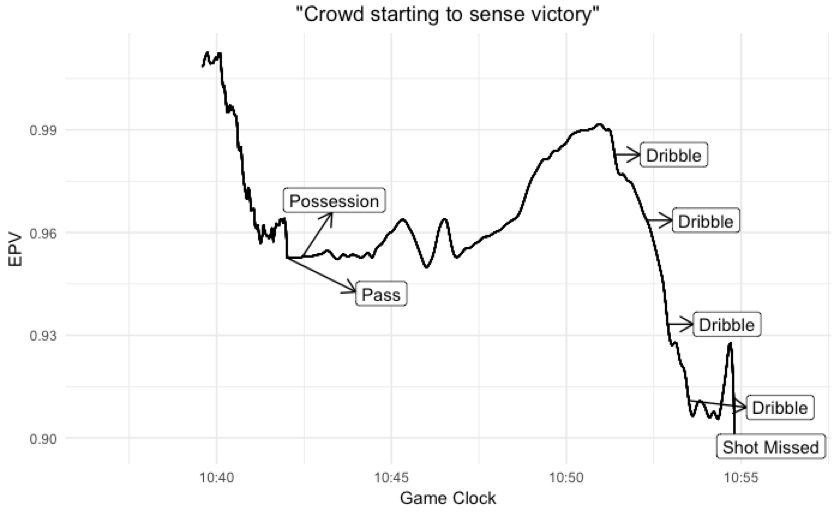
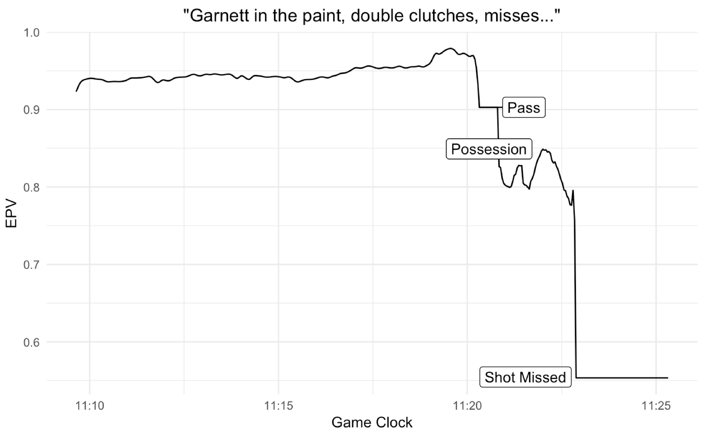

Introduction
In a MIT Sloan Sports Analytics Conference Research Paper, Cervone, D’Amour, Bornn, and Kirk Goldsberry create a metric called Expected Possession Value, EPV. They use optical player tracking data to calculate the number of points the offense is expected to score by the end of the possession in real time, given everything we know now. In other words, EPV of a possession is the weighted average of the outcomes of all future paths that the possession could take (Cervone et al.)
The model breaks down a possession into discrete (macrotransitions) and continuous actions (microtransitions). Macrotransitions include passes, shots, and turnovers whereas microtransitions are defined as every other movement that players make with the ball.
Mathematically,

A snapshot of a single possession in a game between the Spurs and Thunder illustrates the practicality of EPV:

Since EPV is calculated in real time, the authors of the paper interpret EPV as a stock ticker. This lends itself to an augmented graph where we have the spatial configuration of players on top and the stock ticker representation of EPV on the bottom:

The above graph is best explained by the authors:
Consider the following possession from the Spurs/Cavaliers game on February 13, 2013. Down by 2 with less than 10 seconds left, the Spurs inbounded to Tony Parker, who drove to the basket, drawing defenders into the paint and leaving Kawhi Leonard wide open in the corner. Instead of attempting the tightly contested layup that would tie the game, Parker dished to a wide-open Leonard, who promptly sank the game-winning 3-pointer, almost unchallenged by the defense. While Leonard’s 3-pointer was this possession’s (and game’s) “checkmate”, we see from Figure 2 how valuable Parker was in setting it up. Parker actually dramatically increased the value of the possession twice - first by driving towards the basket, and then by passing to Leonard.
I would like to extend this work by animating the above graph using gganimate and interpreting each movement during final minute of a NBA game on November 10th, 2013, between the Miami Heat vs Brooklyn Nets within the context of Expected Possession Value. Unlike a static graph, an animated graph conveys a strong, clear narrative that help teams understand their tracking data.
Briefly, this game is played at Brooklyn in the early stages of the 2013-2014 NBA season, with Brooklyn expected to challenge Miami for a championship in the Spring. The home fans are expecting a victory as their team is up 8 points with one minute left.
A couple of notes: EPV is calculated as soon as the ball crosses the mid court line and the jersey numbers on each player are scraped from Swish Analytics. This site reflects recent jersey numbers, which means Lebron James is #23 in the animations even though he wore #6 for the Miami Heat.
This work was enabled by Dan Cervone’s data and code.
The code used in this post is stored here
Paul Pierce Isolation


At 1:13, the Nets move the ball up the court and as soon as the ball crosses the mid court line, EPV is calculated. The offense starts in an isolation formation with Paul Pierce being defended by Mario Chalmers. As Pierce dribbles toward the 3 point line, EPV steadily increases to approximately 1.00. However, as he drives the basket, EPV take a steep dive, demonstrating a negative contribution to the offense. From the moment the ball crosses the half circle, EPV has decreased from just over 1.00 all the way to 0.90. When Pierce pulls up for a 17-foot jumper near the free throw line, EPV sharply jumps to 0.93, then takes another plunge once the ball hits the back of the rim. Expected Possession Value tells us that Pierce drastically decreased the value of the possession by driving towards the basket.
Wide Open 3-point Shot from Dwayne Wade


At 1:03, Lebron James grabs the rebound and drives all the way to the basket. During this time, EPV drops from around 1.00 to 0.80. This resembles the previous change in EPV during Pierce’s drive towards the basket. Back to this play, instead of shooting a contested 2-point jumper or a layup, James incrementally increases the value of the possession by dishing to an open Chris Bosh at the 3- point line. Bosh wisely passes to Chalmers, a much better 3-point shooter. However, EPV decreases since Bosh was wide open wheras Chalmers faces defensive pressure from Joe Johnson. Once Chalmers dishes to Ray Allen, a prolific 3 point shooter, EPV goes down as Derron Willliams frantically runs to defend Allen. Allen makes the optimal decision and passes to Dwayne Wade in the corner. Wade is left wide open after Williams gambles on Allen shooting the three and Pierce’s unwillingness to defend. At this moment, EPV jumps by 0.1 and after Wade releases a wide open 3-pointer, shoots up to almost 1.60.
Kevin Garnett Shot from the Paint


At 50.4 seconds, Williams slowly dribbles toward the basket before Garnett sets a pick. As Williams moves to the center of the 3-point perimeter defended by Bosh, EPV slightly increases. When Williams passes off to Garnett, who is parked just inside the free throw line, EPV greatly decreases, signifying a very negative impact on the offense. Then, Garnett double clutches and shoots a 2-point jumper in the paint, at which EPV hovers around 0.8. Ultimately, he misses the shot and the ball is eventually rebounded by James. I would have liked Garnett to return the ball to Williams, which would have entailed higher value. The reason is that Bosh realizes that Wade is outmatched by the much taller Garnett and leaves Williams to help out Wade. As a result, Williams was wide open for a 3-pointer and would have had a better chance of knocking down the 3-pointer than Garnett, who was draped by Wade and Bosh.
Frantic Action leading to Chalmers 3-Pointer


At 33.0 seconds, James dribbles up the court and attempts a pass, which bounces off Anderson’s head to the sidelines. While the ball is in no-man’s land, EPV plateuas around 1.035, then takes quite a significant plunge when Allen runs over to the sidelines to retrieve the ball! As Allen passes up top to Chalmers who sets up the offense, EPV climbs back up, showing the recovery of offense’s value. Interestingly, as Chalmers dribbles on the periphery of the 3-point line, EPV spikes up to around 1.075 from 1.025. As Chalmers passes off to Bosh who then passes to James, EPV plateuas each time. As James gets ready to drive the basket, EPV increases, until he dishes off to Chalmers. This offensive possession shows hectic action starting with the ball bouncing off Anderson’s head to the sidelines. As Allen recovers possession and passes off to Chalmers, both sides are in a tumultous state as they try to reset formation. One example of this is shown in the beginning of the game film, when Ray Allen is tustling with Kevin Garnett to regain formation. Fortunately for the Heat, they are rewarded with a Chalmers 3-point shot.

Conclusion
The final minute of this game revealed several insights about Expected Possession Value.
Driving towards the basket with a defender entails a guaranteed decrease in EPV.
Pulling up for a shot leads to an ephemeral spike in EPV.
EPV drastically increases once a player passes to a wide open teammate but decreases once a defender closes down on him.
EPV plateaus when player holds onto ball without dribbling.
EPV shows great fluctuations in loose ball situations when players deviate from offensive/defensive structure.
If you enjoyed this post, you will enjoy Animating Expected Possession Value in the NBA: Part 2
Appendix
This section contains static EPV curves with labels from the dataset, such as “Pass”, “Dribble”, or “Shot Made”. These plots supplement the animated EPV curves with real-time event annotations.
Paul Pierce Isolation

Wide Open 3-point Shot from Dwayne Wade

Kevin Garnett Shot from the Paint

Frantic Action leading to Chalmers 3-Pointer